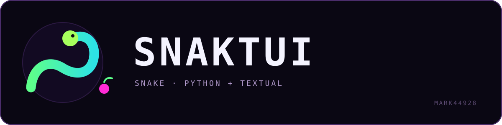
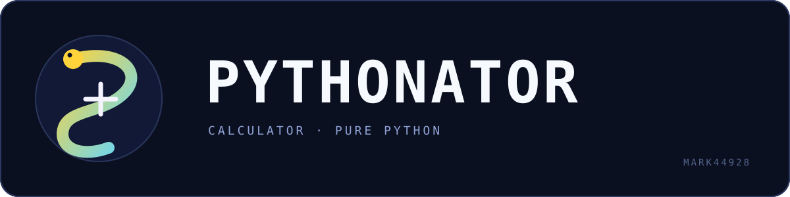
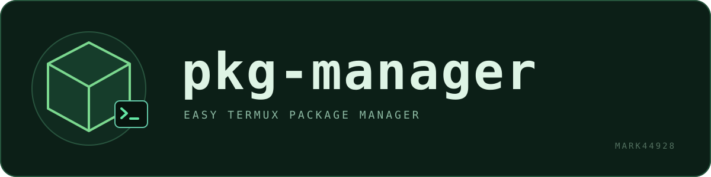
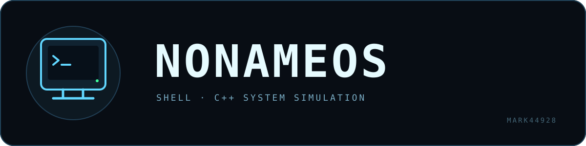
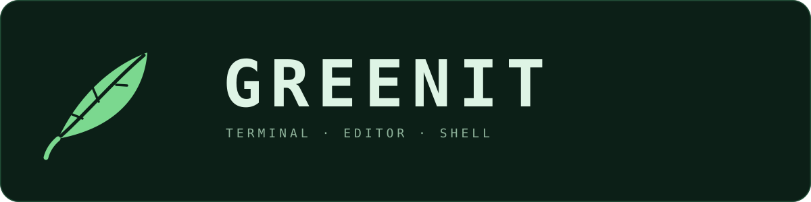

💣Play · arcade
Grub Blasters
Single-file artillery chaos: 73 weapons, destructible terrain, replay, share codes and a searchable Weapon Codex.
Games, calculators, package managers, themes and audio, all built to run on-device. No accounts, no services, and no dependency that doesn't earn its place.





Single-file artillery chaos: 73 weapons, destructible terrain, replay, share codes and a searchable Weapon Codex.
Fast Snake with daily seeds, a ghost of your best run, run codes, themes, achievements, and optional real browser hosting through textual-serve.
Offline single-page calculator with animated graphs, reusable presets, history, units and sixteen themes.
Python + Textual math puzzle game with seven puzzle families, daily seeds, streaks, hints and local achievements.
C++17 terminal mathematics: distributions, small determinants, memory, radix modes, plots, tables and JSON scripting.
Pure stdlib Python calculator with complex math, explainable AST trees, distributions, matrices and radix output.
Saved cities with a match picker, air quality, a 12-hour trend, side-by-side compare and seven-day detail in a friendly Textual TUI. Open-Meteo, no API key.
A 23 ms C++23 Termux-first fetch with truecolor output, JSONL trend reports, alerts and statusline modes.
fzf-driven Termux package management with triage, a visual health dashboard, health history, profiles and lock files.
A 925 KB C++17 OS simulator with a working shell, VFS, virtual services, session restore and selftest.
Green-injected generated palette family for terminals, Neovim, editors and CLIs from one palette source.
The blue sibling with complete terminal/editor coverage, generated galleries and Neovim integration.
The golden-yellow sibling with the same generator, complete app coverage and a matching gallery.
A fastfetch layout made for Android 12 and Termux/X11, with Greenit, Bluney, Yellen and SnakTUI companion presets.
217 checksummed Android 9 alarms, ringtones, notifications and UI sounds with a safe random picker.
Read-only audits, restore scripts and profile generation for rooted Android TV boxes and sticks.
A quiet Oh My Zsh theme with directory, Git state, failure code and a small clock. No glyphs, no boxes, no phosphor cosplay.
The GitHub profile, visual star history, live README index and the source for this page.
A pretty useless countdown to Linus Torvalds' birthday with drifting Tuxes, bundled fonts and a confetti party.
No projects match that filter yet.
Everything here is static, local-first and inspectable. No analytics, no trackers, no cloud account gate. The only runtime is a browser or a terminal.